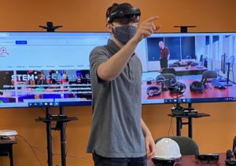

About Me

I am Sam Williams, a computer scientist and programmer specializing
in web-accessibility and audio programming.
My driving force in this world is
to help create a knowledgeable community of programmers that contribute to open-source
and educational programs and applications (for FREE) to help others learn about programming
and computer science! Specifically, I'd like to improve general knowledge on the development
of audio plugins like VSTs. Most of my work and projects focus on these two areas.
Education
I'm currently a Ph.D. student at Virginia Tech. I am a part of Virginia Tech's Distributed Virtual Environments (DVE) Lab that specializes in Human-Computer Interaction (HCI) and eXtended Reality (XR). I also have a B.S. and M.S. degree in computer science from Virginia Tech.
For more information, such as past projects I've worked on, work experiences, skills, etc. please check out my resume, which is accessible via the navigation menu.
Projects
I am very motivated to spread my knowledge accross the world! I put much of my work on GitHub as open source educational material. I love developing in JavaScript and HTML because it's how I prototype most of my projects. I then use GitHub pages to host them (guess what this site is hosted on?) Here are some of my favorites that you can check out for yourself:
Fourier Stuff
Check out some of my work with the famous audio-processing Discrete and Fast Fourier Transform (DFT and FFT) algorithms! Explore an online calculator that showcases a variety of optomized algorithms for calculating FT and IFTs of input values, and visit the live fourier analysis where you can watch the algorithm at work as it guesses the pitch of oscillators or audio input from your microphone!
Check it out here!Online Audio Plugin Development
Explore audio processing in my plug-and-play web browser-based audio plugin GUI development sandbox! Whew, that was a mouthful. This work-in-progress is part of a larger project where I hope to exponentially improve VST development time by allowing prototyping in this sandbox. If you've ever tried developing VSTs using Steinberg's SDK, you know how time consuming and redundant much of it is.
Check it out here!Online x86 Assembly Sandbox and Debugger
This online x86 assembly sandbox and debugger allows you to visualize and manipulate an x86 program's memory and stack during runtime. There is also a console that supports some functional operations including breakpoints (line and conditional), custom labelling, and more. Assembly from Ghidra can be directly imported (so long as the instructions are functional and label references are resolvable).
Check it out here!Music & Audio
I have had a very musical life. I grew up playing guitar, the saxaphone, and french horn. Music is definitely one of my favorite things in the world. Although I love many different types of genres of music, there's something very special to me about electronic dance music (EDM). It inspired me to begin producing music, a hobby I continue to pursue almost daily. I first started using FL studio, my digital audio workstation (DAW), back when I was just 13 years old in 2014. Almost 10 years later, I'm still out here doin my thing. Feel free to check me out on SoundCloud here.
I must give my thanks to SoundCloud for providing a FREE platform for me to share my music! However, due to their generosity, there are upload limits, and since I've been producing music for a while, I've had to create a few accounts. Here they are listed in order from most recent: